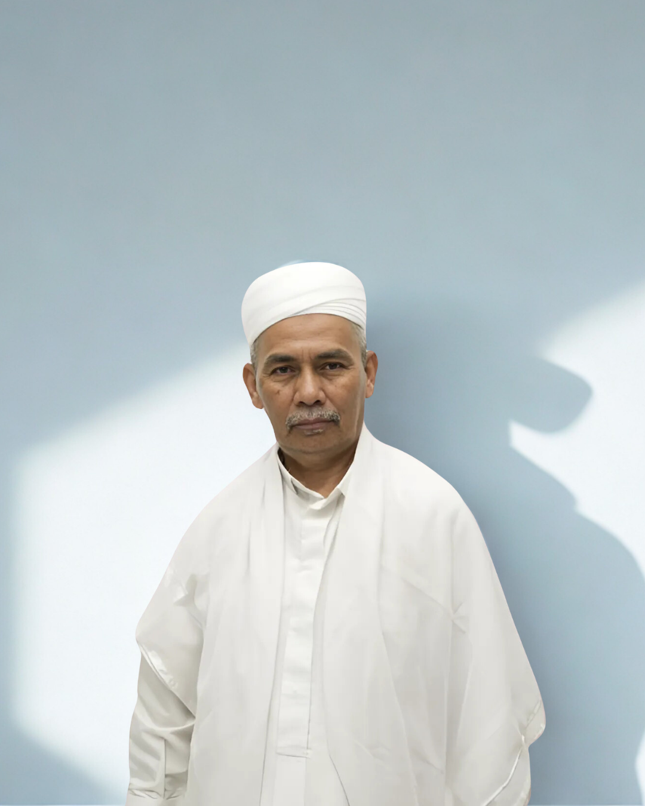
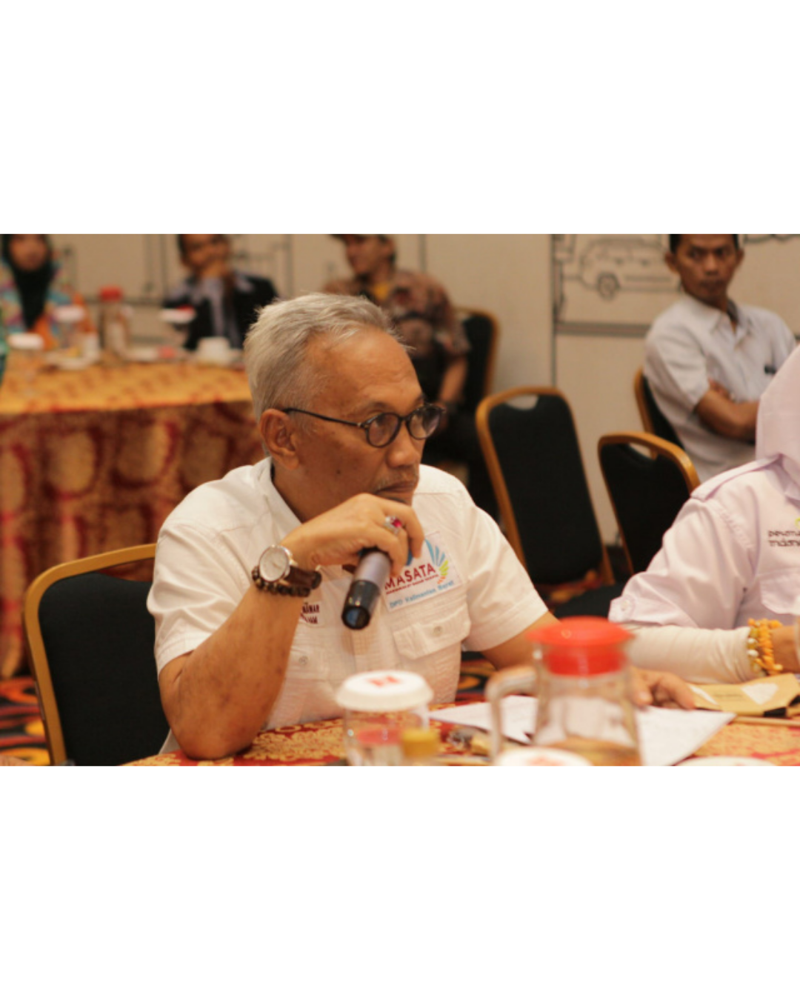

Hall of Fame
Tokoh & Legenda PII Kalimantan Barat

Manajemen
Drs. A. Munir, M.M
Pendiri Sajadah Fajar & Yayasan Bina 45
Pendidikan
Dr. H. Yapandi, M.Pd
Wakil Dekan III FDKI IAIN Pontianak

Hukum
Dr. Herman Hofi Munawar
Pengacara dan Pengamat Politik
Intelektual
Nama Tokoh 4
Cendekiawan Muda
Diplomat
Nama Tokoh 5
Kiprah Internasional